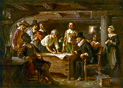

Preston
Summary
Currently:
High: °F
Wind Chill: °F
Humidity: %
Wind: MPH
Five Day Forecast
°F
°F
°F
°F
°F
These are most important events in Preston:
Are you related to the Mayflower pilgrims?
With modern technology it is easier than ever to find out if one is related to the members of the Mayflower company that landed in America 400 years ago in 1620. There were 102 members in that group of Pilgrims, and although roughly half of then died during that first winter, today they have an estimated 35 million descendants. You could be one of them.

Family relationships can be found in a variety of locations with a free account at Familysearch.org, under the activities tab as “Famous Relatives.” They can also be found at www.relativefinder.org. A quick search of the internet yields several sites that tell their stories, such as https://www.pilgrimhall.org/bio_will_inventory_doc.html
We give thanks for our own Pilgrim ancestors: Richard Warren, William Bradford, William Brewster, Francis Cooke, Digory Priest and Myles Standish followed their desire to find a place to worship their God freely in a new land which brought them to America.
Sharing the Pilgrim’s stories at the Thanksgiving dinner table will help you discover more about what the first Thanksgiving was like in Plymouth, Massachusetts 400 years ago. It can also give you insight into what it would have been like to have been there, and why celebrating that event has endured so many years.
As you read about their lives, think about who you are most like. Do you try to make your community better, work hard to make something useful, give of your abundance to those in need, or do you love to help others in some other way?
Read original articleContact Us
Address:
Weather GO!
123 Main Street
Franklin, MI 87654
Phone:
(801) 555-1234
email:
contact@weathergo.net